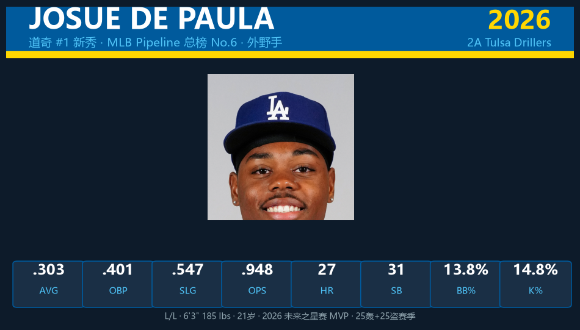
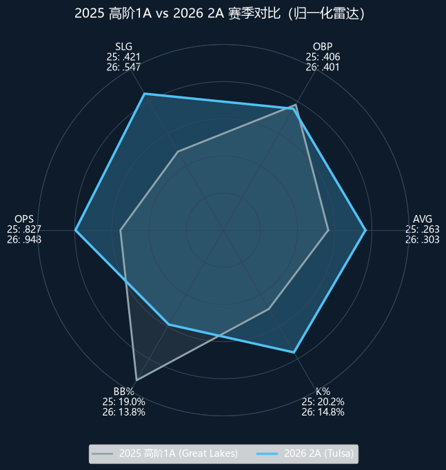
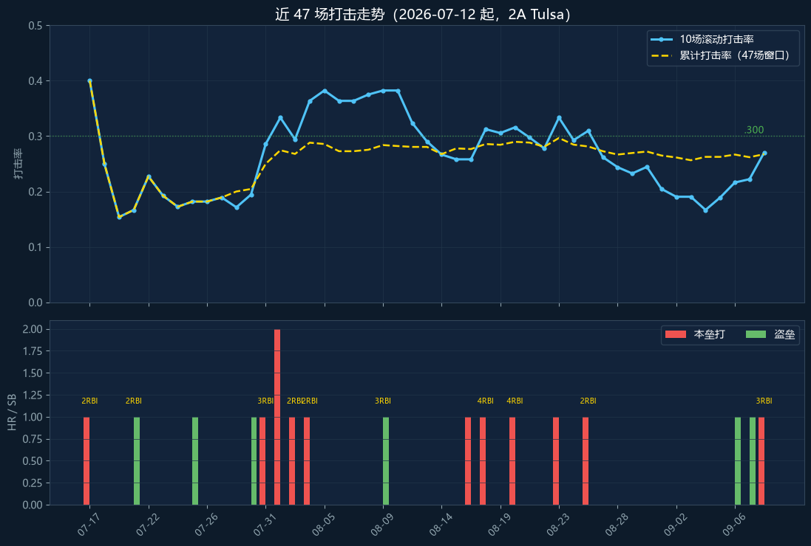
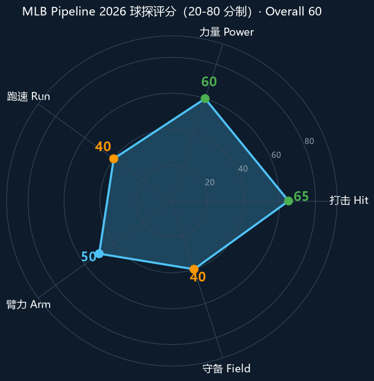

Los Angeles Dodgers #55 | 外野手 | 道奇 #1 新秀 · MLB Pipeline 总榜 No.6

Josue De Paula 是道奇农场十年来评价最高的年轻打者——球团内部认为他比 Miguel Vargas、Andy Pages 等前辈新秀更先进；Pipeline 直接把他比作"缩小版但更运动的 Yordan Alvarez"。
2026 赛季他在 2A Tulsa 交出 .303/.401/.547、OPS .948、27 轰、31 盗、104 打点 的全能成绩单，成为道奇体系 2026 年首位 25轰+25盗的球员，并成为未来之星赛 MVP。三振率仅 14.8%，保送率 13.8%——这种"力量+选球"的组合在 21 岁年龄段极为罕见。
他的价值几乎全部来自球棒：左打、6-3 身材的投射力量、精英级挥棒决策；跑速和守备是短板，长期定位角落外野。大联盟适应性问题的答案，将直接决定道奇十月轮值的排法。
MLB.com 官方报道：道奇将 Pipeline 总榜 No.6 的 De Paula 叫上大联盟。跳过 3A 直上大联盟，球团对他的打棒准备度有十足信心。
在亚特兰大举行的全明星未来之星赛上，De Paula 代表国联轰出本垒打（对白袜左投 Noah Schultz），当选 MVP。随后短暂进入"暂时 inactive"名单调整，7月13日回归。
8月24日达成 25 轰 + 25 盗，是 2026 年道奇农场第一位解锁此成就的球员；最终定格在 27 轰 31 盗，外加 104 分打点（2A 顶尖水平）。
在投手友好的中西部联盟，以 19 岁之龄拿下 OBP .406、OPS .827、保送 81 次三项联盟第二，wRC+ 136，是该联盟第二年长的常规打者。
道奇官员称其为"过去十年球队最佳国际新秀打者"，另一位高层表示他是"自 Corey Seager 以来球队最先进的年轻打者"。
588 打席、152 安打、保送 81 次仅三振 87 次。上半年（4-6月）打击率高达约 .322，7月中旬以来47场窗口回落至 .267 但长打产出依旧（12 轰）。保送数几乎等于三振数，对一名 21 岁力量型打者而言是精英级别的击球纪律。

| 赛季 | 层级 | G | PA | AVG | OBP | SLG | OPS | HR | RBI | SB | BB% | K% |
|---|---|---|---|---|---|---|---|---|---|---|---|---|
| 2025 | 高阶1A Great Lakes | 98 | 426 | .263 | .406 | .421 | .827 | 12 | — | 32 | 19.0% | 20.2% |
| 2026 | 2A Tulsa | 124 | 588 | .303 | .401 | .547 | .948 | 27 | 104 | 31 | 13.8% | 14.8% |
升级 2A 后打击率 +40 点、长打率 +126 点，同时三振率从 20.2% 降到 14.8%——面对更老练的投手反而进步了。唯一的"回落"是保送率（19.0% → 13.8%），说明他更多选择在好球带内解决战斗，而非眼力退步。

7月复出后曾有一段调整期，8月找回火力（26 场 9 轰 23 打点、.282）。进入 9 月样本虽小（8 场），但选球依旧犀利（7 保送对 7 三振）。被叫上前最后一场（9/9）打出 2 安 1 轰 3 打点，状态正佳。整个 47 场窗口累计 .267，意味着他前 77 场是恐怖的 .322——全季 .303 是"高开+稳住"的结果，不是虚火。
De Paula 的招牌是左打棒路与精英级挥棒决策。Pipeline 评价他"拥有体系内最好的左打挥棒之一"，青少年时期就展现出超越年龄的配球识别能力。2026 年他把三振率压到 14.8%，这是大联盟顶级打者的水准。球团内部视他为"自 Corey Seager 以来最先进的年轻打者"。
6-3 身材还有填充空间，目前已有实战力量：2A 单季 27 轰、.547 长打率、274 总垒打。Pipeline 认为他成熟时有机会达到单季 30 轰量级。本季 37 支二垒打说明力量不依赖纯拉打，遍布全场的强劲击球是他的标志。
跑速评分仅 40（20-80 制），且随着身材填充可能更慢。但 31 盗 10 被抓显示他盗垒靠的是阅读投手与时机而非纯速度——这是一项可迁移的大联盟技能，不过别指望他担任开路先锋。
Futures Game 以中外野手身份出场，但 Pipeline 明确判断他守不住中路：射程不足以长期担任 CF。臂力足以应付右外野，最可能的长期落点是左外野/右外野轮换，搭配指定打击。在道奇现有阵容里，他的直接对标是 Teoscar Hernández 离队后的角落外野/DH 缺口。
21 岁跳过 3A 直上大联盟，风险与机遇并存。有利面：选球和接触能力是目前大联盟最值钱的技能组合，且左打恰好补上道奇对阵右投的 lineup 深度。风险面：2A 投手的球速与配球复杂度与大联盟差距巨大，前两周被三振率上升是大概率事件；另外 47 场窗口 .267 说明他并非"即插即热"型。道奇深不见底的阵容允许他慢慢适应——这是大多数新秀没有奢侈。

MLB Pipeline 官方总评 60（A-），道奇农场第 1、全联盟第 6。
A- 级 / 外野手 · ETA 2027（提前至 2026）
De Paula 的轨道已经改写：Pipeline 原本给的 ETA 是 2027，道奇直接提前一年执行。2026 年剩余常规赛他将获得大联盟初体验，对阵右投时进入 lineup 的机会最大。若适应顺利，季后赛名单将是他下一个战场——道奇完全有可能把这位 21 岁重炮带进十月，作为 Teoscar Hernández 之后的角落外野/DH 备选。
Josue De Paula 出生于纽约布鲁克林，高中时随家人搬到多米尼加共和国，2022 年 1 月以 $397,500 签约金加盟道奇。他是前 NBA 球星 Stephon Marbury 与 Sebastian Telfair 的表亲——运动天赋写在基因里。
职业首秀（2022 多米尼加夏季联盟）他就以 .349/.448/.522 拿下联盟打击率第六，随即被球团认定为"十年来最佳国际新秀打者"。此后他一年一个台阶：2023 年美国低阶1A首秀、2024 年跨两级单 A、2025 年高阶1A 上垒机器、2026 年 2A 全面爆发+Futures Game MVP，直至今日跳级大联盟。每一步都在更年轻的年纪交出更漂亮的数据——这是超级新秀的教科书轨迹。